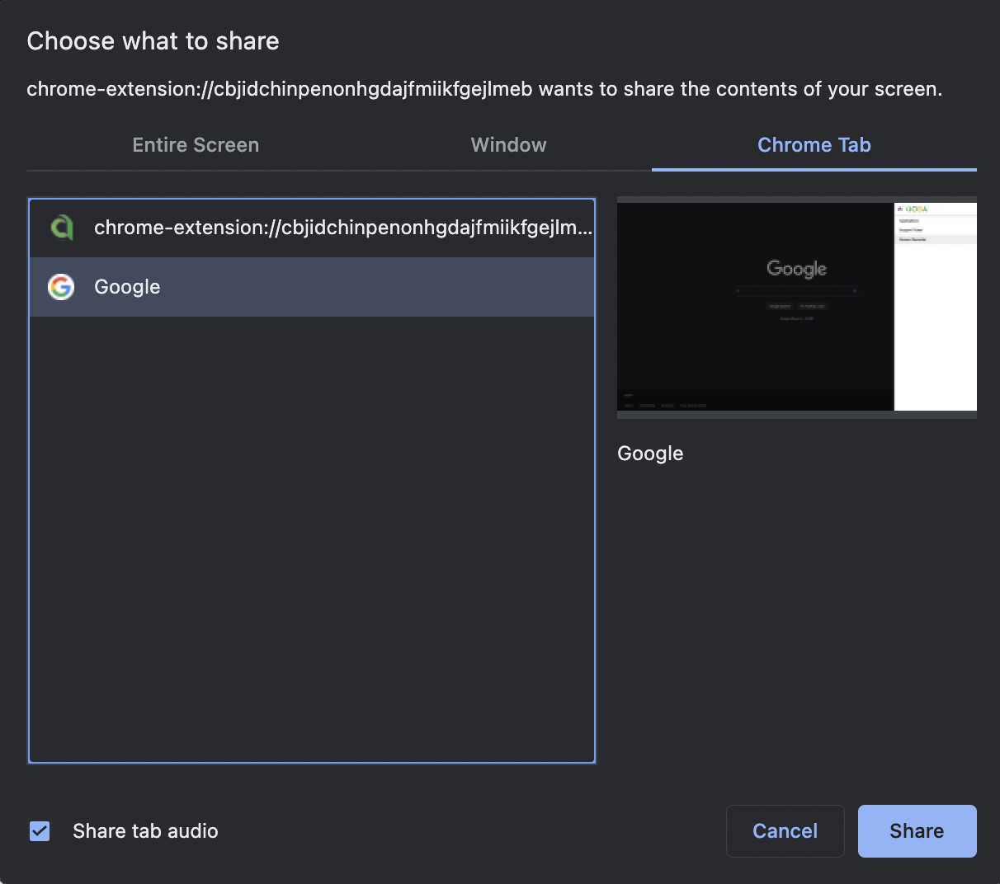
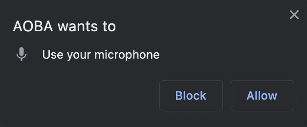

[ Logo ]
Capture Screen
Record
Stop
Tutorial
Click the arrows to the left or right to go forward or back
1) Click the Capture Screen button
2) Select Chrome Tab

3) Check Share tab audio
4) Click Share
5) Click the Record Button
If the following dialog pops up, select Allow.

6) Click the Stop Button
7) Click the Download link.
IMPORTANT NOTE:
The file is temporarily stored on your computer
so be sure to click the download button or it will disappear for good.
8) Click Stop Sharing or close the recording tab.
‹
›
‹
›
‹
›
‹
›
‹
›
•
•
•
•
•